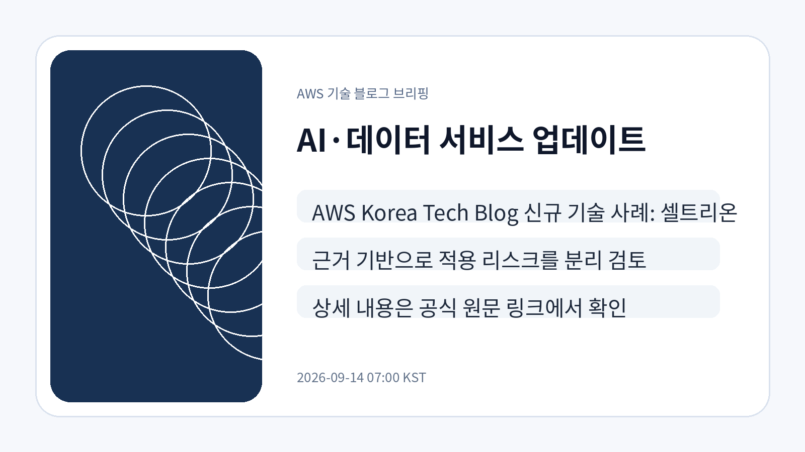
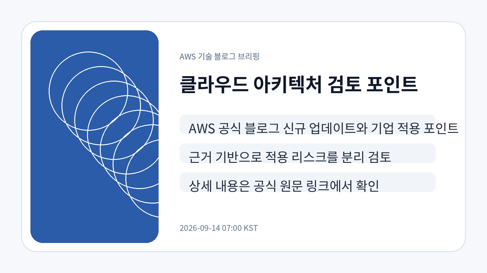
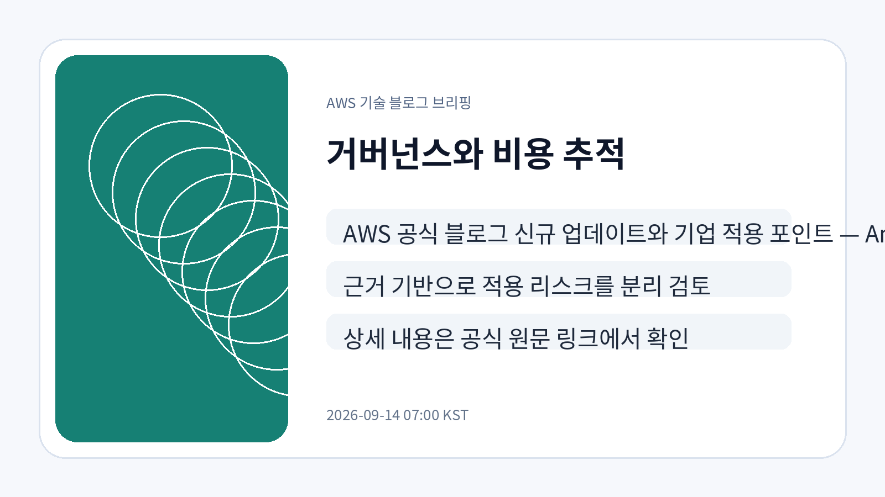

Korea Tech · 2026-09-13
AWS Korea Tech Blog 신규 기술 사례: 셀트리온제약의 AI-DLC 방법론과 Kiro를 활용한 OMS 서비스 구축하기
공식 RSS에서 AWS Korea Tech Blog 글로 확인된 항목입니다. 원문은 2026-09-13 게시되었고, 기업 적용 전에는 서비스 범위·권한·비용·데이터 경계를 함께 확인해야 합니다.
공식 원문 보기공식 블로그 원문을 먼저 보존하고 LLM Wiki와 GBrain 저장소에 연결한 뒤, 기업 의사결정자가 확인해야 할 기술 변화와 검토 포인트만 한국어로 재구성했습니다.
Korea Tech · 2026-09-13
공식 RSS에서 AWS Korea Tech Blog 글로 확인된 항목입니다. 원문은 2026-09-13 게시되었고, 기업 적용 전에는 서비스 범위·권한·비용·데이터 경계를 함께 확인해야 합니다.
공식 원문 보기이번 신규 항목은 제약사의 AI-DLC 방법론과 Kiro 활용 사례입니다. 개발 기간 제약이 큰 업무 시스템에서 요구사항 정리, 구현 보조, 검토 자동화가 함께 다뤄졌다는 점이 확인됩니다.
| 기사 | 게시 | 분류 |
|---|---|---|
| AWS Korea Tech Blog 신규 기술 사례: 셀트리온제약의 AI-DLC 방법론과 Kiro를 활용한 OMS 서비스 구축하기 | 2026-09-13 | Korea Tech |
국내 기업은 AI 개발 보조 도구를 단순 생산성 도구로만 보지 말고, 도메인 지식 전달 방식, 검토 책임, 산출물 품질 기준, 내부 보안 정책을 함께 설계해야 합니다. 원문만으로 비용 효과와 조직 적용 범위는 확정할 수 없어 추가 검증이 필요합니다.


